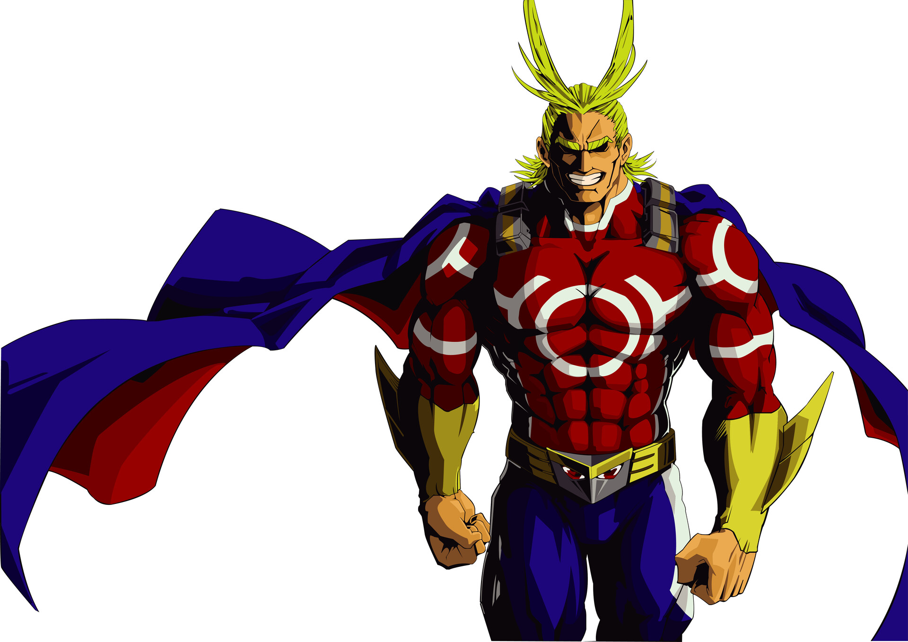

All Might (オールマイト Ōrumaito), nome civil Toshinori Yagi (八や木ぎ俊とし典のり Yagi Toshinori), é o Herói Profissional que se tornou icônico como o Símbolo da Paz (平和の象徴 Heiwa no Shōchō) e reconhecido como o Herói Número 1. Nasceu como Sem-Individualidade, tendo sido escolhido por Nana Shimura como o sucessor do One for All.
 Download All MightAntes de conhecer sua professora Shimura Nana ele não tinha uma individualidade, ao conhecê-la ela o deu o One For All, 5 anos antes dos acontecimentos da série, ele foi ferido em uma luta contra All For One e isso limitou o uso de sua individualidade.
All Might aparece pela primeira vez quando Izuku Midoriya é atacado por um vilão. Ele usa o Texas Smash no vilão e o derrota. Depois ele se despede de Izuku, e vai embora, mas ele não contava que o garoto havia agarrado em suas pernas, All Might havia dito que era um fanatismo exagerado e que ia levar Izuku para um lugar seguro, ele o leva para o terraço de um prédio. Posteriormente ele diz que dessa vez iria embora mas é impedido pelo garoto que o pergunta se alguém sem individualidade pode ser um herói, nessa hora All Might volta a sua forma original e conta para o garoto que não é possível e que ele deveria se tornar um policial se quisesse salvar as pessoas, ele diz para o garoto também que não há nenhum problema em sonhar, nesvjbhgjsa hora ele também conta que sofreu um ferimento em uma batalha há 5 anos, (referindo a batalha que teve contra All For One que limitou seu tempo como herói), ele pede para Izuku não conte a ninguém sobre sua real forma, e ele vai embora, depois ele descobre que o vilão que havia capturado quando salvou o garoto havia fugido, e ele vai atrás dele, depois ele acaba encontrando esse vilão novamente, que fez de Bakugo seu refém, ele não pode lutar e tem apenas que ficar observando, ao ver a coragem de Izuku em salvar o jovem ele acaba ganhando raça para deter o vilão e o derrota. Depois eles se reencontram novamente e All Might parabeniza Izuku dizendo que ele foi o mais corajoso daquele dia e que por causa da bravura do garoto que ele pôde agir, depois ele diz para Izuku que ele pode se tornar um herói, e ele revela sua individualidade ao garoto, e diz que ele é digno de herdar o seu poder, Izuku aceita a proposta e eles treinam durante 10 meses para que o jovem garoto seja aceito na U.A. a maior e mais conhecida instituição de super heróis do mundo, ele também menciona que é necessário que o corpo de Izuku esteja apto para receber o seu poder, ele diz que uma das maneiras desse treinamento seria limpando todo o lixo de um parque, após esses 10 meses All Might parabeniza Izuku pelo seu trabalho duro e lhe oferece um fio de seu cabelo, de acordo com All Might é só assim que a individualidade pode ser passada, e que todo o treinamento havia sido feito apenas para o corpo do jovem garoto ser apto para receber o seu poder.
Uma semana depois do teste da U.A., Izuku recebe uma carta avisando se ele vai passar ou não na U.A., da carta aparece All Might em uma tela, dizendo que ele foi bom no teste escrito, mas ele havia falhado pois ficou com 0 no teste prático, portanto All Might diz que Uraraka Ochaco convenceu a U.A. a aprovar o garoto por sua bravura e ele acabou passando devido aos seus pontos de resgate, assim podendo entrar na U.A.
50 anos.